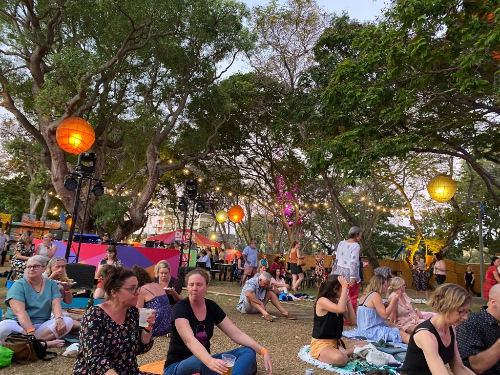

| About Darwin | Why Study in Darwin | Darwin Festival | Darwin Street Art Festival | Contact Me |
The Darwin Festival 2020 (DF20) is held each August and is a major event on the Darwin calendar. It spans 18 glorious days & nights and includes an exciting mix of outdoor concerts, comedy, theatre, visual arts and dance. The festival really comes alive at night, under the stars at Festival Park. Each warm evening you will find locals and tourists mingling and enjoying a drink with free live music and yummy food stalls on offer. The Housewarming event opened at 5pm 6th August in Festival Park marked the beginning of DF20.

2020 has been a year like no other, so Darwin Festival will be doing things a bit differently. The outbreak of the COVID-19 has impacted Australians in varying ways. Hence, being COVID-19 safe is top priority and everyone’s responsibility. Stay at home if you are feeling unwell. Before you do head out to the festival, you need to register your contact details on the DF20 website. You will receive a confirmation email or SMS, which you will need to show at the main entrance to Festival Park. This is a requirement for this year.
Even though there are COVID-19 safety measures in place, it does not mean DF20 will be any less fun. The Darwin Festival 2020 is set to wow attendees with 18 jam packed days of music, theatre and art that celebrate the best of local and international talent. More than 50 events will take place between Thursday 6th August and Sunday 23rd August during Darwin popular dry season. With more than half of artists being Northern Territory locals, the celebration is sure to reflect the unique perspective of the region.
Music will be in abundance with free events, sold-out shows and music awards being just some of what is on offer. The festival will open with a free celebration in Festival Park, for which the whole family is invited to drop by to to eat, drink and catch up. If you are seeing a Sunset Stage show, you can exchange your ticket for a wristband at the main gate, which will allow you to move between Festival Park and the Sunset Stage. You can enter the ticketed area from 5pm and settle in with a drink from the bar or bring food and drink in from the main Festival Park area.
As always, the Rimfire Energy Bamboo Bandstand will host free music every night at Festival Park. There will be free dance performances on Saturday and Sunday evening as well. So, while you eat and drink and hang out with friends, you can relax and enjoy some great local tunes and moves. Late night music lovers can also enjoy a free show on Thursday 13th August with Tutup Mulut performing their electro acoustic Indonesian space music from Malam.
For those who are up for the challenge of saving the life of a cartoon hero from doom, they can participate in Avoidable Perils. This social experiment projected on screens in Festival Park asks you to send SMS to help decide the fate of a series of characters. The more people who get involved, the more likely the onscreen heroes are to be rescued. So come rally the group and experience the fun.
Well known for its love of comedy, the Darwin Festival will offer an array of comedic shows including some of Australia’s best; Dont’t Feed the Ducks starred by award-winning comedian, Amy Hetherington and I See Dead People presented by Australia’s premier archaeologist-comedian, KC Martin-Stone. Dance, film, classical music, cabaret, circus and visual arts will also be represented throughout the festival at events that showcase accomplished musicians, provocative ideas and world class exhibitions. Favourites include the Darwin Aboriginal Art Fair, Darwin Symphony Orchestra and the Final Front Ear.
For more details about the venue and session time for each events, please visit the DF20 website at https://www.darwinfestival.org.au/whats-on/. Tickets are on sale now and some events are set to sell lsout so it is best to get in early!